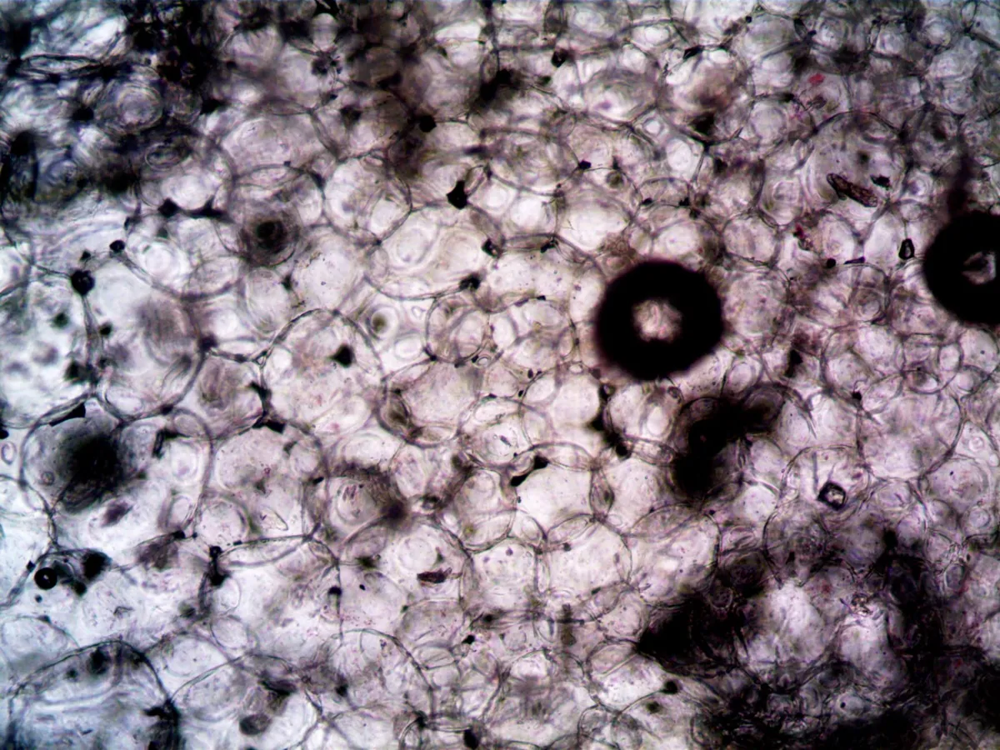

Diet Drinks Work As Well As Water For Weight Loss, Major Trial Finds

Key takeaways
- I spent years white-knuckling my cravings at my kitchen counter, forcing down lukewarm tap water while desperately staring at a can of Diet Dr Pepper in my fridge.
- I truly believed that having a single sip of artificial sweetener would instantly derail months
- Track what feels sustainable and adjust gradually.
I spent years white-knuckling my cravings at my kitchen counter, forcing down lukewarm tap water while desperately staring at a can of Diet Dr Pepper in my fridge. I truly believed that having a single sip of artificial sweetener would instantly derail months of gym sessions and clean eating.
Everything changed when I stopped listening to social media gurus and finally looked at the hard data showing that Diet Drinks Work As Well As Water For Weight Loss, Major Trial Finds.
A rigorous, multi-site clinical study tracked real people trying to trim down over an extended period. Half drank water exclusively, while the other group kept their zero-calorie fizzy drinks in the rotation.
The results completely shattered the clean-eating dogma I was clinging to. Those sipping artificially sweetened beverages lost just as much weight—and in some phases, slightly more—than the plain water group.
When you cut out all joy from your diet, compliance collapses. You end up bingeing on late-night bakery treats because you denied yourself a simple four-calorie carbonated fizz at lunch.
I spent years bouncing between strict water-only purism and midnight fridge raids. Learning to embrace small compromises was a related healthy tip that finally kept my sanity intact.
We need to talk about sensory satisfaction in everyday fat loss. Plain tap water hydrates your cells, but it does zero favors for your psychological craving for sweetness and carbonation.
By swapping regular 250-calorie sodas for diet alternatives, you eliminate hundreds of empty calories effortlessly. You can read another practical guide to see how tiny liquid calorie swaps add up over months.
Dieting does not reward suffering; it rewards sustainable consistency. Pick the habit you can actually maintain on your hardest Tuesday.
When researchers evaluated long-term compliance, people allowed diet drinks reported less overall hunger. They felt less restricted, which made sticking to their daily calorie deficit much easier.
I noticed the exact same thing in my own life once I stopped punishing myself. To pair this habit shift with better recovery, check out this similar wellness insight.
Of course, your beverage choices are just one piece of your broader evening routine. When stress spikes and sleep suffers, your brain screams for quick sugar regardless of what you drank at lunch.
Getting solid, uninterrupted sleep became my secret weapon for managing hunger hormones like ghrelin. I used to wake up at every creak in my apartment, which ruined my appetite control the following day.
Running a simple, soothing White Noise Machine completely transformed my bedroom into a quiet sanctuary. Disclosure: This page may contain affiliate links.
When you sleep deeply for eight hours, you wake up with steady willpower instead of ravenous sugar cravings. You can easily stay consistent with this setup every evening.
The 2-Minute Win
Next time a 3 PM sugar craving strikes, drink a cold sparkling water or zero-calorie soda with a slice of lime before opening the snack pantry.
Sustainable wellness is about ditching perfection and finding functional tools that keep you moving forward. You can always explore more weight guides to build a sustainable daily lifestyle.
Educational only — not medical advice.
Recommended Reading
- Mindful Eating Techniques for Better Digestion and Sustainable Weight Management
- Biohacking Your Sleep: The Ultimate Guide to Better Rest and Recovery
- Busy Pro's Guide to Quick, Healthy Eating
More in weight
 weight
weightZepbound And Mounjaro May Turn On The Body'S Calorie-Burning Brown Fat
Discover how Zepbound And Mounjaro May Turn On The Body'S Calorie-Burning Brown Fat to help accelerate your personal met
Read article → weight
weightA Realistic GLP-1 Weight Loss and Diabetes Drugs Linked to Nutritional Deficiencies in Nearly 1 in 6 Children
GLP-1 weight loss and diabetes drugs linked to nutritional deficiencies in nearly 1 in 6 children. Learn practical, scie
Read article →Related posts
weightZepbound And Mounjaro May Turn On The Body'S Calorie-Burning Brown Fat
Discover how Zepbound And Mounjaro May Turn On The Body'S Calorie-Burning Brown Fat to help accelerate your personal met
Read article →weightA Realistic GLP-1 Weight Loss and Diabetes Drugs Linked to Nutritional Deficiencies in Nearly 1 in 6 Children
GLP-1 weight loss and diabetes drugs linked to nutritional deficiencies in nearly 1 in 6 children. Learn practical, scie
Read article →
weightNew Compound Melts Fat, Saves Muscle: A Game-Changer?
Could a new compound melt fat while saving muscle? Discover the science behind this potential game-changer for weight lo
Read article →